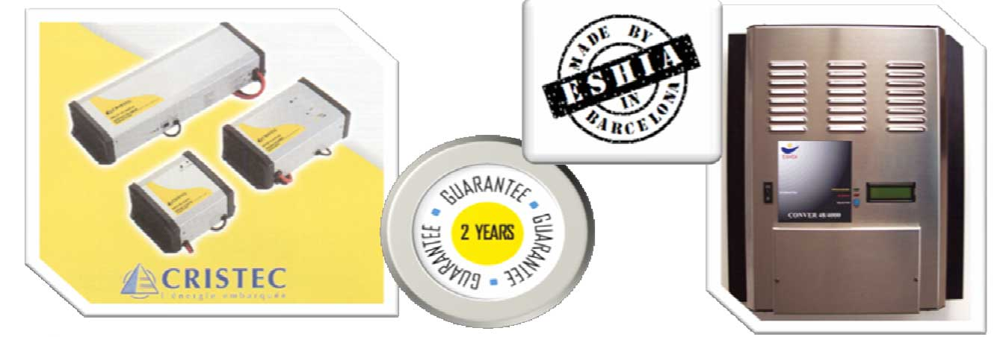

CONVERTIDORES / ONDULADORES / INVERSORES CC-CA SENOIDALES
Convertidores de 12 V CC / 230 V CA
| Ref: | Tipo | Caracteristicas |
|---|---|---|
| 10404 | CONVER 12/275 | 275 W - 450 W potencia pico |
| 10405 | CONVER 12/300 DISPLAY | 300 W - 400 W potencia pico |
| 10406 | CONVER 12/500 | 500 W - 1000 W potencia pico |
| 10408 | CONVER 12/1000 | 1000 W - 2200 W potencia pico |
| 104010 | CONVER 12/2100 | 2100 W - 5000 W potencia pico |
Convertidores de 24 V CC / 230 V CA
| Ref: | Tipo | Caracteristicas |
|---|---|---|
| 10421 | CONVER 24/350 | 350 W - 650 W potencia pico |
| 10433 | CONVER 24/600 | 600 W - 1200 W potencia pico |
| 10462 | CONVER 24/1300 | 1300 W - 2800 W potencia pico |
| 10482 | CONVER 24/2400 | 2400 W - 5200 W potencia pico |
| 10484 | CONVER 24/2800 | 2800 W - 6000 W potencia pico |
| 10486 | CONVER 24/3300 DISPLAY | 3000 W - 6300 W potencia pico |
| 10491 | CONVER 24/4000 DISPLAY | 4000 W - 8000 W potencia pico |
Convertidores de 48 V CC / 230 V CA
| Ref: | Tipo | Caracteristicas |
|---|---|---|
| 10507 | CONVER 48/700 | 700 W - 1400 W potencia pico |
| 10511 | CONVER 48/1500 | 1500 W - 3000 W potencia pico |
| 10513 | CONVER 48/2200 DISPLAY | 1900 W - 5000 W potencia pico |
| 10525 | CONVER 48/3000 | 3000 W - 6000 W potencia pico |
| 10530 | CONVER 48/4000 | 4000 W - 9000 W potencia pico |
| 10532 | CONVER 48/4800 DISPLAY | 4800 W - 8800 W potencia pico |
Convertidores de 96 V CC / 230 V CA
| Ref: | Tipo | Caracteristicas |
|---|---|---|
| 10534 | CONVER 96/8000 DISPLA Y | 8000 W - 15000 W potencia pico |
- Voltaje de salida: 115 o 230 Vca
- Frecuencia estable en 50 o 60 Hz
- Voltaje de entrada CC: 12, 24, 48 o 96 V
- Separación galvánica
- Funcionamiento bajo consumo stand-by
- Distorsión armónica <2%
- Autoapagado por protección cuando: Tensión de batería demasiado baja, sobretensión de batería,cortocircuito en la salida, sobrecarga, polaridad de batería invertida
- Potencia pico entre 1,5 y 3,5, según modelos
- Protección ante cortocircuitos e inversión de polaridad
- Temperatura de trabajo: -20 hasta +60oC
- PCB tratados antihumedad
- Caja IP21
- Normativa standard CEE
Alarmas acústicas
Señal acústica intermitente:
(Indica que el inversor se encuentra en estado de alarma y que la tensión de salida será desconectada en breve)
Señal acústica continua (2 seg):
